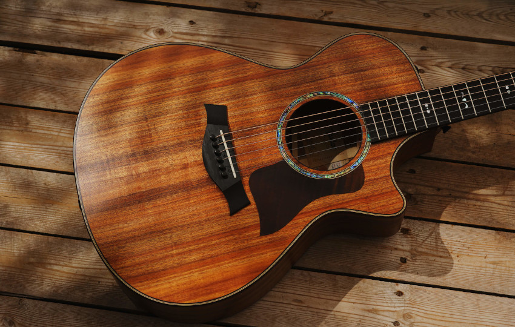

My Hobbies
Playing the Guitar
I have been playing the guitar for over four years now, and I currently take lessons each Wednesday at the University of St. Thomas. I prefer to play the acoustic guitar over the electric, and I particularly enjoy playing folk music and classical music. A goal of mine is to eventually release some of my own music, and the guitar in the image below is similar to my own.
Spending Time Outside
Another hobby of mine is spending time outside, especially with my friends and family. I love to swim, bike, and run, so summers in Minnesota are lots of fun for me. I hope to study abroad before my college experience is complete, and I would love to visit a country with lots of great wilderness spots!